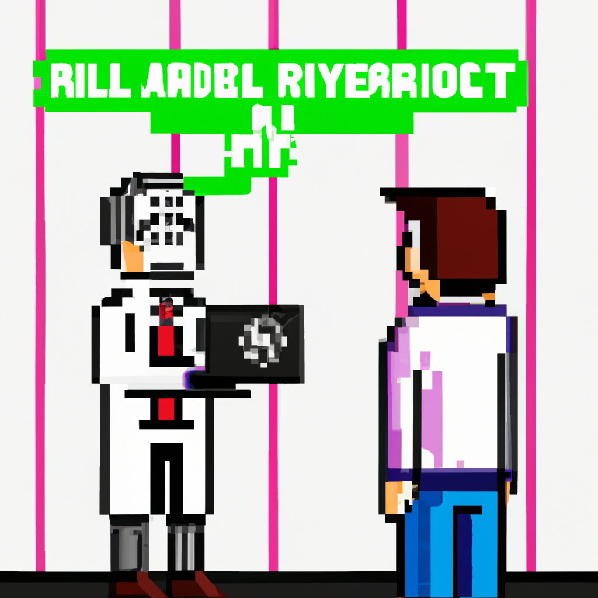

Why AI will never replace the radiologist
John Hopfield's associative learning algorithm, which was proposed in 1982, was an example of a mathematical representation of Human neurons. The algorithm was used to create a basic model of a neuron's behavior. The idea was that instead of using a physical model of a neuron, you could instead use a mathematical one. The algorithm was based on the idea of a "Hopfield network" which is a system of interconnected neurons. The neurons were connected together in a way that each of them could affect the others, similar to how neurons in the brain are connected.
The Hopfield network could be used to store and recall memories, which was similar to how the brain works. By using the algorithm, you could create a network that could store and recall memories in a similar way to how the human brain does. This was an important breakthrough in machine learning because it showed that we could use machines to mimic the behavior of the human brain.
The Hopfield network is a great example of how machine learning can be used to simulate and understand the behavior of the human brain. It is a representation of the neurons in the brain and how they interact with each other. By using this algorithm, we can learn more about how the brain works and how we can use machine learning to further our understanding of the human brain.